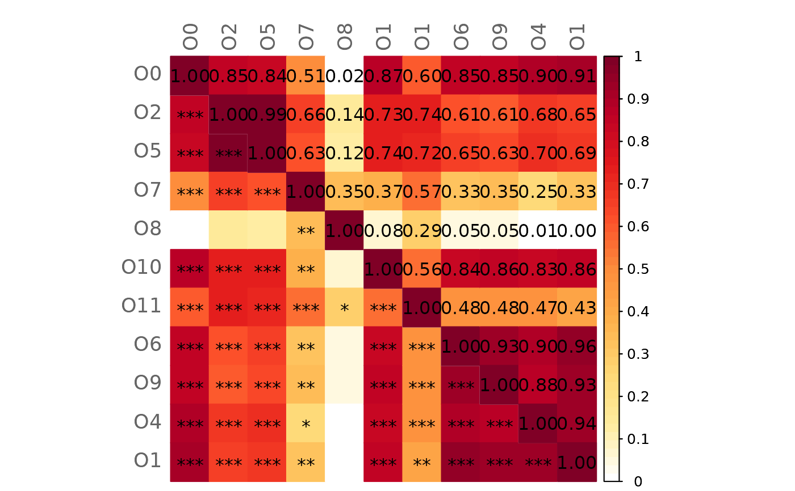
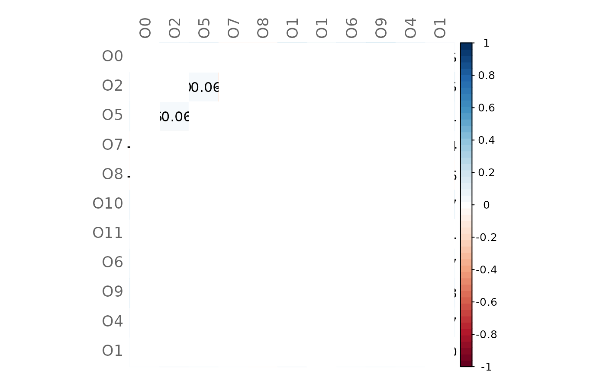
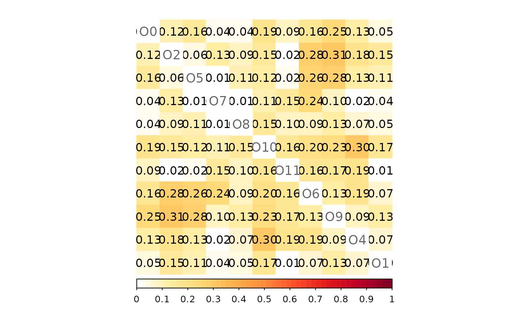
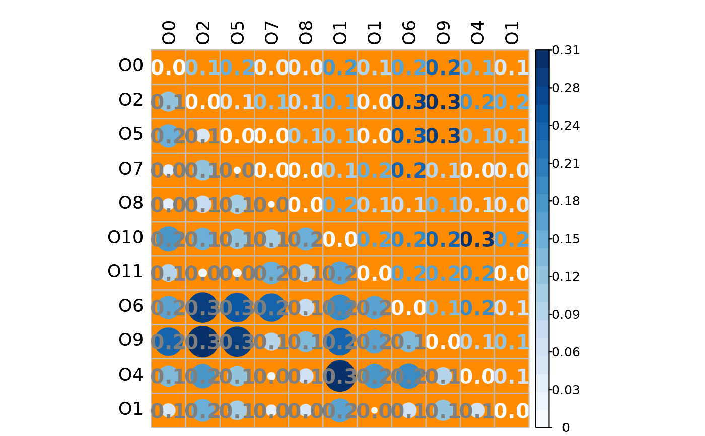
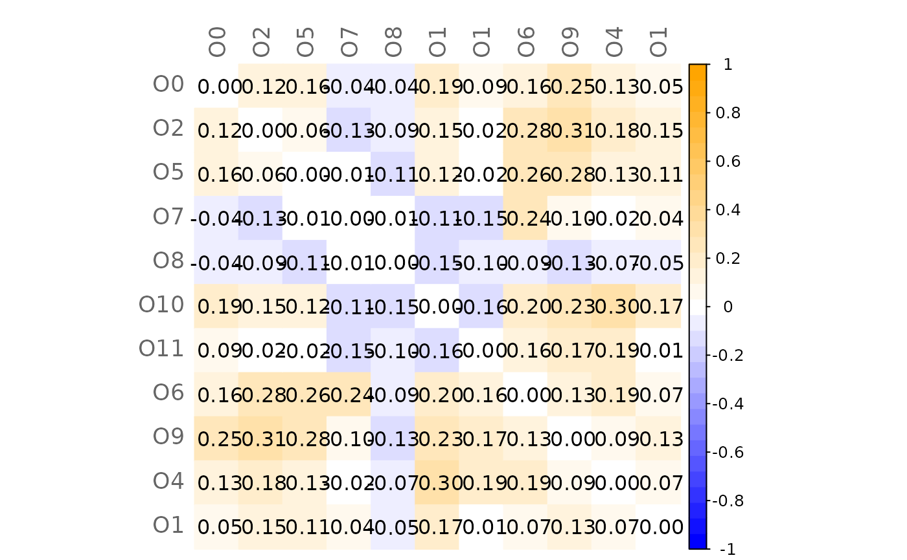

Create a heatmap with p-values
plotHeat.RdA function to draw heatmaps with the option to use p-values
or significance codes as cell text. It allows to draw a mixed heatmap with
different cell text (values, p-values, or significance code) in the lower
and upper triangle. The function corrplot is used
for plotting the heatmap.
Usage
plotHeat(
mat,
pmat = NULL,
type = "full",
textUpp = "mat",
textLow = "code",
methUpp = "color",
methLow = "color",
diag = TRUE,
title = "",
mar = c(0, 0, 1, 0),
labPos = "lt",
labCol = "gray40",
labCex = 1.1,
textCol = "black",
textCex = 1,
textFont = 1,
digits = 2L,
legendPos = "r",
colorPal = NULL,
addWhite = TRUE,
nCol = 51L,
colorLim = NULL,
revCol = FALSE,
color = NULL,
bg = "white",
argsUpp = NULL,
argsLow = NULL
)Arguments
- mat
numeric matrix with values to be plotted.
- pmat
optional matrix with p-values.
- type
character defining the type of the heatmap. Possible values are:
"full"Default. The cell text specified via
textUppis used for the whole heatmap."mixed"Different cell text is used for the upper and lower triangle. The upper triangle is specified via
textUppand the lower triangle viatextLow."upper"Only the upper triangle is plotted. The text is specified via
textUpp."lower"Only the lower triangle is plotted. The text is specified via
textLow.
- textUpp
character specifying the cell text either for the full heatmap (if
typeis "full") or for the upper triangle (iftypeis "mixed" or "upper"). Default is "mat". Possible values are:"mat"Cells contain the values in the matrix given by
mat"sigmat"Same as "mat" but insignificant values (and cells) are blank.
"pmat"Cells contain the p-values given by
p-mat."code"Cells contain significance codes corresponding to the p-values given by
p-mat. The following coding is used: "***: 0.001; **: 0.01; *: 0.05"."none"No cell text is plotted.
- textLow
same as
textUppbut for the lower triangle (iftypeis "mixed" or "lower"). Default is "code".- methUpp
character specifying how values are represented in the full heatmap (if
typeis "full") or in the upper triangle (iftypeis "mixed" or "upper"). Possible values are: "circle", "square", "ellipse", "number", "shade", "color" (default), "pie". The method is passed to themethodargument ofcorrplot.- methLow
same es
methUppbut for the lower triangle.- diag
logical. If
TRUE(default), the diagonal is printed. IfFALSEandtypeis "full" or "mixed", the diagonal cells are white. IfFALSEandtypeis "upper" or "lower", only the non-diagonal cells are printed.- title
character giving the title.
- mar
vector specifying the plot margins. See
par. Default is c(0, 0, 1, 0).- labPos
character defining the label position. Possible values are: "lt"(left and top, default), "ld"(left and diagonal;
typemust be "lower"), "td"(top and diagonal;typemust be "upper"), "d"(diagonal only), "n"(no labels). Passed tocorrplotargumenttl.pos.- labCol
label color. Default is "gray40". Passed to
corrplotargumenttl.col.- labCex
numeric defining the label size. Default is 1.1. Passed to
corrplotargumenttl.cex.- textCol
color of the cell text (values, p-values, and code). Default is "black".
- textCex
numeric defining the text size. Default is 1. Currently only works for types "mat" and "code".
- textFont
numeric defining the text font. Default is 1. Currently only works for type "mat".
- digits
integer defining the number of decimal places used for matrix values and p-values.
- legendPos
position of the color legend. Possible values are: "r"(right; default), "b"(bottom), "n"(no legend).
- colorPal
character specifying the color palette used for cell coloring if
coloris not set. Available are the sequential and diverging color palettes fromRColorBrewer:- Sequential:
"Blues", "BuGn", "BuPu", "GnBu", "Greens", "Greys", "Oranges", "OrRd", "PuBu", "PuBuGn", "PuRd", "Purples", "RdPu", "Reds", "YlGn", "YlGnBu", "YlOrBr", "YlOrRd"
- Diverging:
"BrBG", "PiYG", "PRGn", "PuOr", "RdBu", "RdGy", "RdYlBu", "RdYlGn", "Spectral"
By default, "RdBu" is used if the first value of
colorLimis negative and "YlOrRd" otherwise.- addWhite
logical. If
TRUE, white is added to the color palette. (first element for sequential palettes and middle element for diverging palettes). For a diverging palette,nColshould be set to an odd number so that the middle color is white.- nCol
integer defining the number of colors to which the color palette should be interpolated. Default is 51L.
colorRampis used for color interpolation.- colorLim
numeric vector with two values defining the color limits. The first element of the color vector is assigned to the lower limit and the last element of the color vector to the upper limit. Default is c(0,1) if the values of
matare in [0,1], c(-1,1) if the values are in [-1,1], and the minimum and maximum values otherwise.- revCol
logical. If
TRUE, the reversed color vector is used. Default isFALSE. Ignored ifcoloris given.- color
an optional vector with colors used for cell coloring.
- bg
background color of the cells. Default is "white".
- argsUpp
optional list of arguments passed to
corrplot. Arguments set withinplotHeat()are overwritten by arguments in the list. Used for the full heatmap iftypeis "full" and for the upper triangle iftypeis "mixed" or "upper".- argsLow
same as
argsUppbut for the lower triangle (iftypeis "mixed" or "lower").
Value
Invisible list with two elements argsUpper and
argsLower containing the corrplot
arguments used for the upper and lower triangle of the heatmap.
Examples
# Load data sets from American Gut Project (from SpiecEasi package)
data("amgut2.filt.phy")
# Split data into two groups: with and without seasonal allergies
amgut_season_yes <- phyloseq::subset_samples(amgut2.filt.phy,
SEASONAL_ALLERGIES == "yes")
amgut_season_no <- phyloseq::subset_samples(amgut2.filt.phy,
SEASONAL_ALLERGIES == "no")
# Sample sizes
phyloseq::nsamples(amgut_season_yes)
#> [1] 121
phyloseq::nsamples(amgut_season_no)
#> [1] 163
# Make sample sizes equal to ensure comparability
n_yes <- phyloseq::nsamples(amgut_season_yes)
amgut_season_no <- phyloseq::subset_samples(amgut_season_no, X.SampleID %in%
get_variable(amgut_season_no,
"X.SampleID")[1:n_yes])
#> Error in h(simpleError(msg, call)): error in evaluating the argument 'table' in selecting a method for function '%in%': error in evaluating the argument 'object' in selecting a method for function 'sample_data': object 'amgut_season_no' not found
# Network construction
amgut_net <- netConstruct(data = amgut_season_yes,
data2 = amgut_season_no,
measure = "pearson",
filtTax = "highestVar",
filtTaxPar = list(highestVar = 50),
zeroMethod = "pseudoZO",
normMethod = "clr",
sparsMethod = "thresh",
thresh = 0.4,
seed = 123456)
#> Checking input arguments ...
#> Done.
#> Data filtering ...
#> 95 taxa removed in each data set.
#> 1 rows with zero sum removed in group 1.
#> 1 rows with zero sum removed in group 2.
#> 43 taxa and 120 samples remaining in group 1.
#> 43 taxa and 162 samples remaining in group 2.
#>
#> Zero treatment in group 1:
#> Zero counts replaced by 1
#>
#> Zero treatment in group 2:
#> Zero counts replaced by 1
#>
#> Normalization in group 1:
#> Execute clr(){SpiecEasi} ...
#> Done.
#>
#> Normalization in group 2:
#> Execute clr(){SpiecEasi} ...
#> Done.
#>
#> Calculate 'pearson' associations ...
#> Done.
#>
#> Calculate associations in group 2 ...
#> Done.
#>
#> Sparsify associations via 'threshold' ...
#> Done.
#>
#> Sparsify associations in group 2 ...
#> Done.
# Estimated and sparsified associations of group 1
plotHeat(amgut_net$assoEst1, textUpp = "none", labCex = 0.6)
plotHeat(amgut_net$assoMat1, textUpp = "none", labCex = 0.6)
# Compute graphlet correlation matrices and perform significance tests
adja1 <- amgut_net$adjaMat1
adja2 <- amgut_net$adjaMat2
gcm1 <- calcGCM(adja1)
gcm2 <- calcGCM(adja2)
gcmtest <- testGCM(obj1 = gcm1, obj2 = gcm2)
#> Perform Student's t-test for GCM1 ...
#> Adjust for multiple testing ...
#>
#> Proportion of true null hypotheses: 0.22
#> Done.
#>
#> Perform Student's t-test for GCM2 ...
#> Adjust for multiple testing ...
#>
#> Proportion of true null hypotheses: 0.08
#> Done.
#>
#> Test GCM1 and GCM2 for differences ...
#> Adjust for multiple testing ...
#>
#> Proportion of true null hypotheses: 0.64
#> Done.
# Mixed heatmap of GCM1 and significance codes
plotHeat(mat = gcmtest$gcm1,
pmat = gcmtest$pAdjust1,
type = "mixed",
textLow = "code")

# Mixed heatmap of GCM2 and p-values (diagonal disabled)
plotHeat(mat = gcmtest$gcm1,
pmat = gcmtest$pAdjust1,
diag = FALSE,
type = "mixed",
textLow = "pmat")
# Mixed heatmap of differences (GCM1 - GCM2) and significance codes
plotHeat(mat = gcmtest$diff,
pmat = gcmtest$pAdjustDiff,
type = "mixed",
textLow = "code",
title = "Differences between GCMs (GCM1 - GCM2)",
mar = c(0, 0, 2, 0))
# Heatmap of differences (insignificant values are blank)
plotHeat(mat = gcmtest$diff,
pmat = gcmtest$pAdjustDiff,
type = "full",
textUpp = "sigmat")

# Same as before but with higher significance level
plotHeat(mat = gcmtest$diff,
pmat = gcmtest$pAdjustDiff,
type = "full",
textUpp = "sigmat",
argsUpp = list(sig.level = 0.1))
# Heatmap of absolute differences
# (different position of labels and legend)
plotHeat(mat = gcmtest$absDiff,
type = "full",
labPos = "d",
legendPos = "b")

# Mixed heatmap of absolute differences
# (different methods, text options, and color palette)
plotHeat(mat = gcmtest$absDiff,
type = "mixed",
textLow = "mat",
methUpp = "number",
methLow = "circle",
labCol = "black",
textCol = "gray50",
textCex = 1.3,
textFont = 2,
digits = 1L,
colorLim = range(gcmtest$absDiff),
colorPal = "Blues",
nCol = 21L,
bg = "darkorange",
addWhite = FALSE)

# Mixed heatmap of differences
# (different methods, text options, and color palette)
plotHeat(mat = gcmtest$diff,
type = "mixed",
textLow = "none",
methUpp = "number",
methLow = "pie",
textCex = 1.3,
textFont = 2,
digits = 1L,
colorLim = range(gcmtest$diff),
colorPal = "PiYG",
nCol = 21L,
bg = "gray80")
# Heatmap of differences with given color vector
plotHeat(mat = gcmtest$diff,
nCol = 21L,
color = grDevices::colorRampPalette(c("blue", "white", "orange"))(31))
